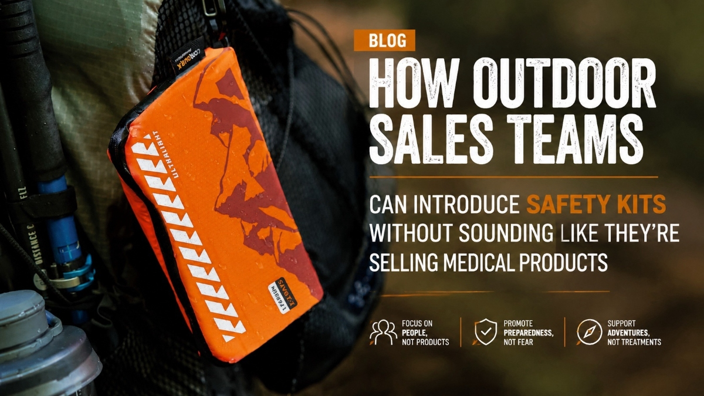

How Outdoor Sales Teams Can Introduce Safety Kits Without Sounding Like They're Selling Medical Products
JUL 22, 2026

Many outdoor retailers and brands already know that first aid kits make sense as an accessory.
But there's one question that comes up again and again: "How do we introduce them without sounding like a medical supplier?"
The good news is that customers usually don't need a medical sales pitch.
They need a trip preparation conversation.
Start with the Adventure, Not the Injury
A common mistake is asking:
"Would you like to buy a first aid kit?"
That immediately turns the conversation into a medical product discussion.
Instead, outdoor sales teams can ask:
"Where are you planning to use the tent?"
The answer naturally opens the door to the right recommendation.
Three Simple Customer Scenarios
1. Day Trips & Casual Camping
Customer: "Mostly weekend trips and local campsites."
Sales response: "For that kind of travel, most customers choose a compact emergency kit that's easy to keep in the vehicle."
Recommended: MINI
2. Family Camping & Caravans
Customer: "We're travelling with family for a few days."
Sales response: "In that case, many families prefer a larger kit with more supplies for common camping situations."
Recommended: STANDARD
3. Overlanding & Remote Travel
Customer: "We'll be travelling far from towns."
Sales response: "For remote trips, experienced travellers usually carry a more comprehensive kit designed for longer journeys."
Recommended: PLUS
Notice What Changed
In each conversation, the sales team is not talking about wounds, bandages, or medical terminology.
They're talking about:
- Trip type
- Travel distance
- Family vs solo travel
- Preparation level
That feels natural in an outdoor retail environment.
Why This Works for Outdoor Brands
Outdoor customers are already making a larger purchase decision.
They're buying a tent, rooftop setup, awning, caravan accessory, or overlanding gear.
A first aid kit becomes one more practical item that completes the trip, rather than a separate medical purchase.
For brands, that often means:
- Higher average order value
- More complete product bundles
- Easier cross-selling
- Better customer experience
Keep the Range Simple
One reason many retailers struggle with safety products is too much choice.
A simple MINI / STANDARD / PLUS structure gives staff an easy recommendation path without requiring medical training.
The Best Outdoor Sales Line
"Before you head out, do you already have a kit for the kind of trip you're planning?"
That's usually all it takes.
Looking to Add Safety Kits to Your Outdoor Range?
GoSafeMed helps outdoor brands and retailers introduce practical safety products through a simple three-level system:
- MINI - Everyday Adventures
- STANDARD - Family Camping
- PLUS - Remote Expeditions
Easy for customers to choose. Easy for sales teams to recommend.